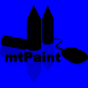
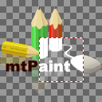
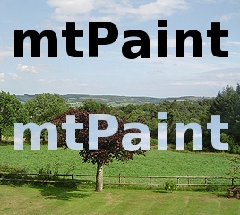
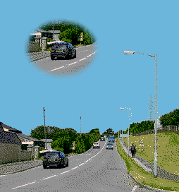
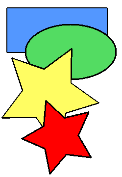
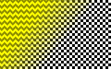
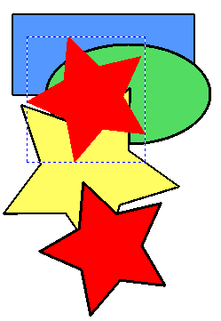

mtPaint umí vytvoøit a pou¾ívat a¾ tøi ¹ikovné kanály - Alfa, Výbìr a Maska. Menu Kanály má nìkolik voleb slou¾ící pro manipulaci s tìmito funkcemi. Tyto kanály budou mít v¾dy stejnou velikost jako právì upravovaný obrázek. Kanály mù¾ete zobrazovat jako pøekryvné vrstvy a pøedepsat jejich barvu a prùhlednost s pou¾itím volby 'Konfigurovat Overlaye'.
Jednotlivé kanály mù¾ete upravovat jejich vybráním z menu a následnì pou¾itím normálních kreslicích nástrojù. Hodnota pixelù pro jejich vykreslení se upraví v 'Li¹tì nastavení'.
Obrázek pou¾ívá alfakanál kvùli urèení, jak je transparentní daný pixel. Alfakanály mohou být pou¾ity pro jemné smíchání hran jednoho obrázku pøi vkládání na jiný obrázek, jako s vrstvami. Velmi se to hodí na vìci, jako je text.
V hlavním editaèním oknì bude pixel, který je transparentní alfa kanálem, zobrazen jako souèást ¹achovnice asi takto:
Pokud chcete upravovat pouze alfakanál, mù¾e být ¹ikovné skrýt kanál obrázku, nebo zobrazit alfakanál jako pøekryv. Tyto volby mù¾ete zapínat, nebo vypínat v menu Kanály. Takto bude vypadat horní obrázek se tìmito volbami zapnutými:

Pokud máte alfakanál a dìláte zmìny do obrazového kanálu, mù¾e být u¾iteèné párovat kreslicí akce mezi obrazovým a alfa kanálem (nebo je naopak nechat oddìlené). Napøíklad zde jsou výsledky nakreslení obdélníku s 'Párováním RGBA Operací' zapnutým a potom vypnutým v menu Kanály:


Kanál výbìru se pou¾ívá kopírovací funkcí pro vkládání pouze urèitých èástí obrázku. Napøíklad mù¾ete chtít kopírovat a vlo¾it eliptickou oblast asi takto:

Kanál masky se pou¾ívá pro ochranu urèitých oblastí obrázku pøed jejich zmìnami kreslicími nástroji. Mù¾ete napøíklad ochránit eliptickou oblast pøed jejím po¹kozením sprejem asi takto:

Kanály masky se mohou také pou¾ít pro selektivní aplikování efektù, jako rozmazání, zaostøení, nebo kteroukoliv barevnou transformaci.
Normálnì je ka¾dý pixel masky kompletnì nastaven, nebo vymazán (255 nebo 0), ale je mo¾né pou¾ít mezihodnoty zaji¹»ující pseudoochranu. Pøíklady tohoto naleznete v sekci 7.5.8.
Pokud upravujete obrázek s libovolným typem kanálu, mtPaint ulo¾í tato data jako souèást PNG formátu. V¹echny ostatní formáty tato data neulo¾í a pokud chcete kanály zachovat, musíte pou¾ít formát PNG, nebo ulo¾it kanály samostatnì pou¾itím funkce v menu Kanály.
Technicky øeèeno je kanál ulo¾en jako komprimovaný soukromý blok, co¾ znamená, ¾e mtPaint bude tìmto datùm rozumìt, ale ostatní obrázkové editory nikoliv.
Tato metoda sel¾e pro obrázky s indexovanou paletou, které obsahují jiné netransparentní barvy se stejnou RGB hodnotou jako ta transparentní. Tomu lze zabránit vybráním jiné transparentní RGB hodnoty na jinou, která není pou¾itá.
Zde je jiná metoda:
Je mo¾né vystøíhnout text z fotografie jako tady:

Je mo¾né vytvoøit výstøi¾ky z fotografie a pou¾ít je pro webovou grafiku asi takto:

Je mo¾né pou¾ít efekt Gaussova rozmazání pro opeøení hran libovolného kanálu asi takto:

Je také mo¾né pou¾ít gradient pro dosa¾ení jiných typù opeøených hran jako toto:

Pro vytvoøení obrysù kolem obrázku mù¾ete pou¾ít alfakanál asi takto:



pro pøechodové efekty obrázkù lze také pou¾ít èásteèné maskování. Napøíklad následující obrázek jsem vytvoøil takto:

Je mo¾né emulovat nástroj Magická hùlka, který se objevuje v jiných programech pou¾itím kanálu výbìru a nástroje vyplnìní. Napøíklad zde je výchozí obrázek:
Pro výbìr a vlo¾ení èervené hvìzdy musíte provést následující:

Je také mo¾né pou¾ít tuto vyplòovací metodu mnohokrát pøed kopírováním a vkládáním v poøadí pro pøidání více oblastí z originálního obrázku do výbìru. Napøíklad mù¾u vyplnit modré a ¾luté tvary pro dosa¾ení tohoto výsledku: